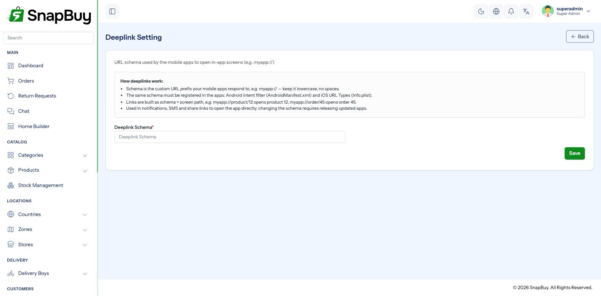

Deeplink Settings
Menu path: Settings → Deeplink Settings
A deeplink opens a specific screen in your app rather than the app's home screen. Tapping a shared product link should land on that product — not on a generic landing page.

The setting
| Field | Meaning |
|---|---|
| Deeplink Schema | The custom URL scheme your apps register — for example snapbuy |
With the schema set to snapbuy, links take the form:
snapbuy://product/1042
snapbuy://category/17The schema must match what is built into the apps
The scheme is compiled into the Customer and Delivery Boy apps. Changing it here without rebuilding and republishing both apps breaks every deeplink — taps open nothing at all.
Set it during initial setup and leave it alone.
Choose a unique schema
Schemes are first-come, first-served on a device. A generic value like shop or store may already be claimed by another installed app, and the wrong app opens. Use your brand name.
What deeplinks are used for
| Use | Effect |
|---|---|
| Shared product links | Opens that product in the app |
| Push notification taps | Opens the relevant order or offer |
| Promotional campaign links | Sends customers to a specific category or offer |
| Payment gateway returns | Brings the customer back into the app after paying |
Payment returns depend on this
Several gateways redirect the customer back after payment. Without a working deeplink, mobile customers are stranded in the browser after paying — the money is taken but they never return to the order confirmation, and they usually assume the payment failed and try again.
App-side configuration
The panel setting is only half the job. Each app must declare the scheme:
| Platform | Where |
|---|---|
| Android | Intent filter in AndroidManifest.xml |
| iOS | URL Types in Info.plist |
See Customer App — Panel URL & Deeplink.
Universal Links and App Links
Custom schemes only work if the app is installed; a browser cannot resolve them otherwise. Android App Links and iOS Universal Links use your https:// domain instead and fall back to the website when the app is absent. They need domain verification files hosted on your site and are configured in the app projects, not here.
Testing
Android, over ADB:
adb shell am start -a android.intent.action.VIEW -d "snapbuy://product/1"iOS, in the simulator:
xcrun simctl openurl booted "snapbuy://product/1"Or paste the link into a note on the device and tap it.
Test on a device without the app installed too
A deeplink that does nothing when the app is absent is expected behaviour for a custom scheme — but you should know what your customers see, and consider Universal Links if it matters.
Troubleshooting
| Symptom | Cause | Fix |
|---|---|---|
| Deeplinks do nothing | Schema differs from the app build | Match the value, or rebuild the apps |
| Wrong app opens | Schema collides with another app | Choose a unique schema |
| Works on Android, not iOS | URL Types missing from Info.plist | Add it and rebuild |
| Customers stranded after paying | Deeplink not configured | Set the schema; verify the gateway return URL |
| Notification tap opens the home screen | Payload has no deeplink target | Check the notification template |